Présentation — Froger David
Entre science, symbolique et culture
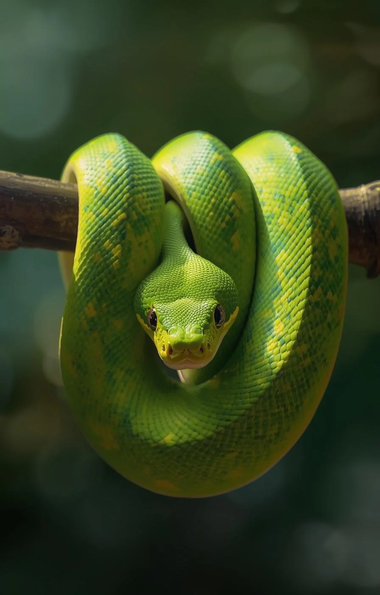
01 — Science
Les serpents ont évolué à partir des lézards il y a environ 100 millions d'années, développant progressivement leurs caractéristiques uniques.
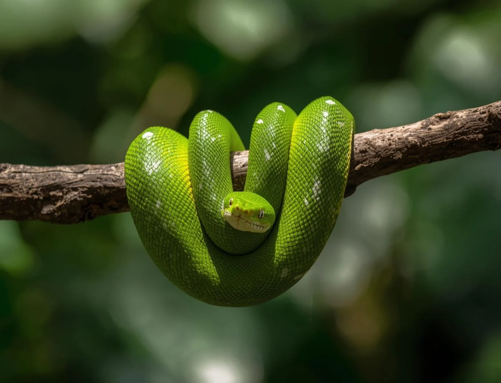
Ces reptiles ont développé des adaptations uniques pour survivre dans des environnements variés — des déserts arides aux profondeurs marines.
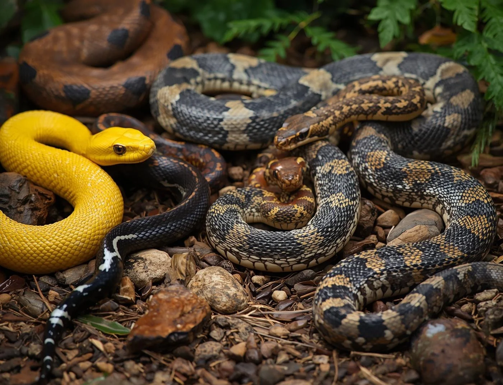
Les serpents sont classés en plusieurs familles regroupant plus de 3 000 espèces, chacune avec ses caractéristiques morphologiques distinctes.
02 — Diversité
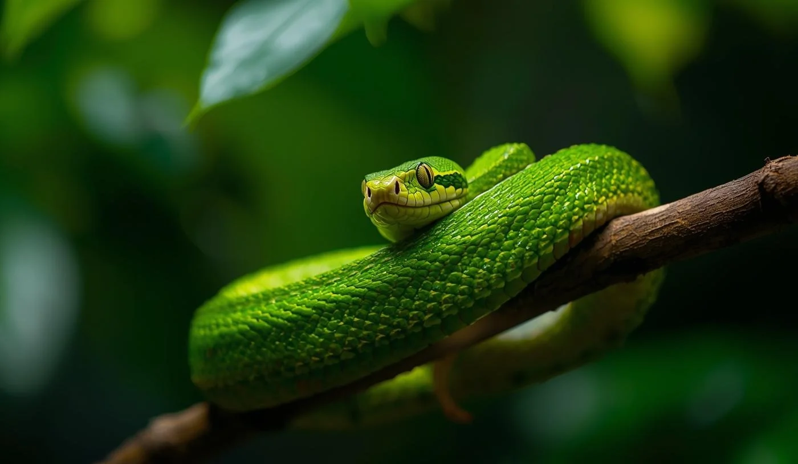
Serpents dotés de glandes à venin, redoutables pour leurs proies et potentiellement dangereux pour leurs prédateurs.
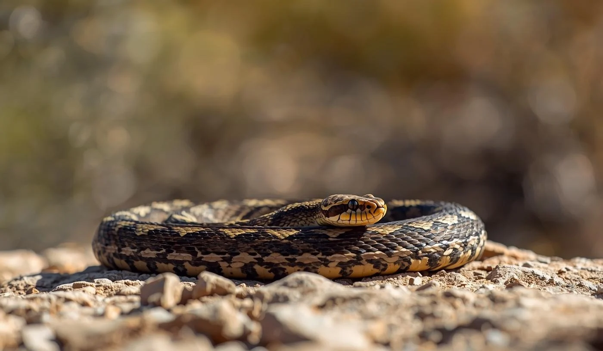
Serpents qui enroulent leur corps autour de leurs proies pour les étouffer avant de les avaler entières. Pythons et boas en sont les représentants emblématiques.
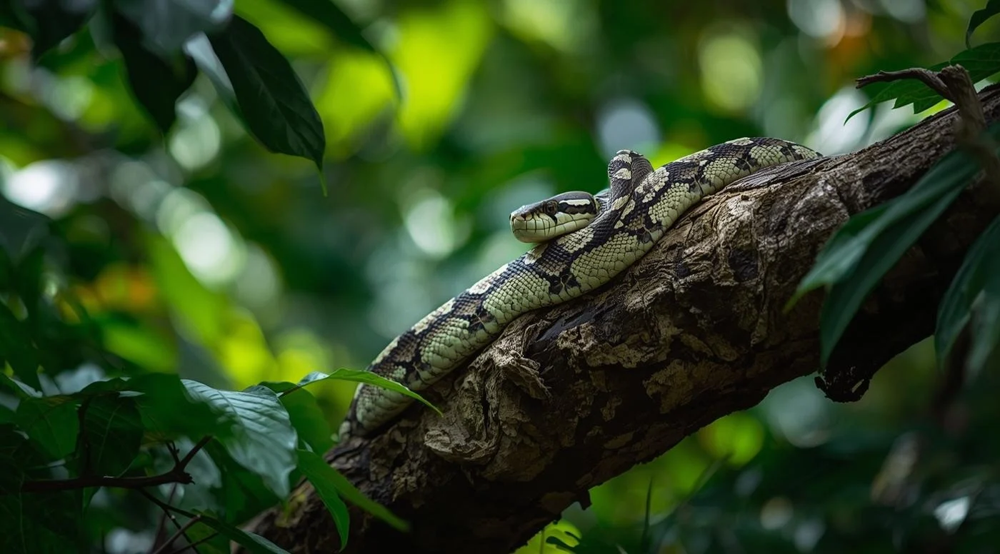
Serpents non venimeux, généralement inoffensifs pour l'homme. On en trouve abondamment en Europe, notamment dans les prairies et sous-bois.
Serpents parfaitement adaptés à la vie aquatique et à la chasse sous-marine. Leur queue aplatie fonctionne comme un gouvernail naturel.
03 — Symbolique
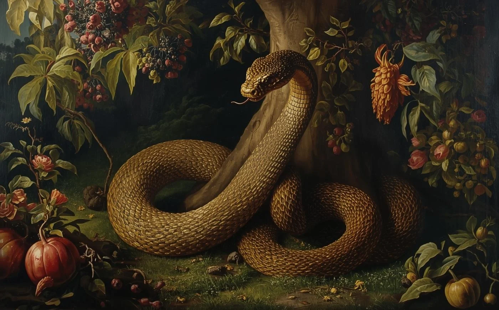
Incarnation de la tentation dans le jardin d'Éden, le serpent incite Ève à croquer le fruit défendu. Il devient le symbole du péché originel, de la ruse et de la chute de l'homme.
Symbole universel de la médecine, le bâton d'Asclépios enroulé d'un serpent représente la guérison, la régénération et la connaissance des poisons comme remèdes.
04 — Art & Littérature
Peinture
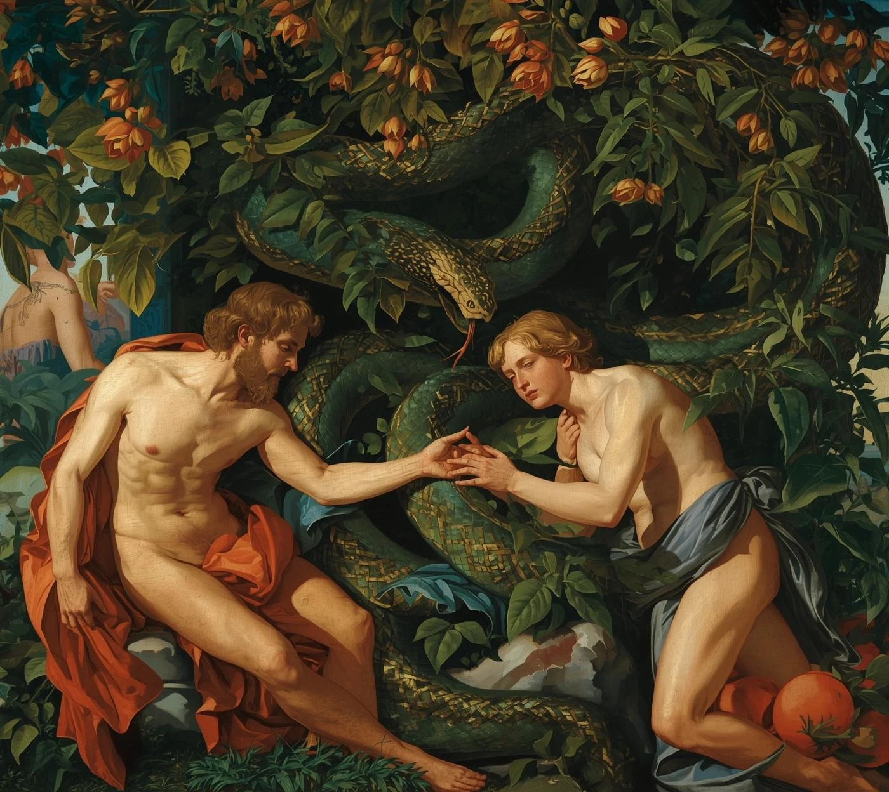
Michel-Ange
Adam et Ève face au serpent tentateur dans le jardin d'Éden — l'une des représentations les plus iconiques du péché originel dans la peinture occidentale.
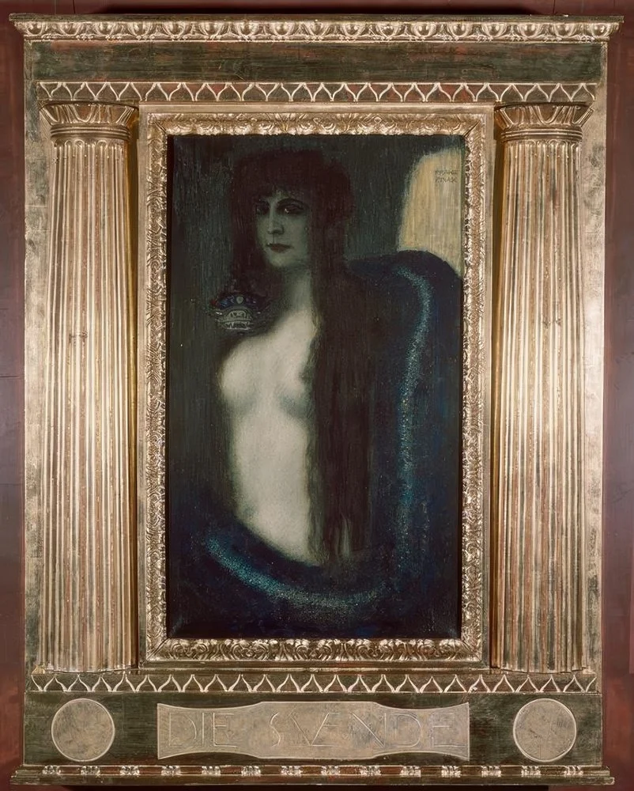
Franz von Stuck, 1893
Une femme envoûtée par un serpent enroulé autour de son corps : puissante image de séduction, de danger et de mystère. Chef-d'œuvre du symbolisme allemand.
Littérature & Poésie
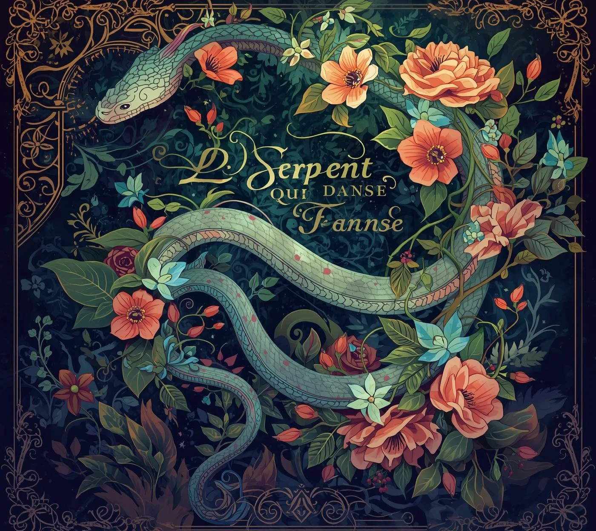
Charles Baudelaire
Baudelaire dresse une interprétation artistique de la beauté serpentine, comparant les ondulations d'une femme à celles d'un serpent gracieux — entre charme et envoûtement.
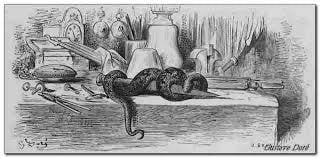
Jean de La Fontaine
Dans cette fable, le serpent symbolise l'agressivité vaine et l'impuissance face à plus fort que soi — une leçon d'humilité sur ses propres limites.
05 — Culture Pop
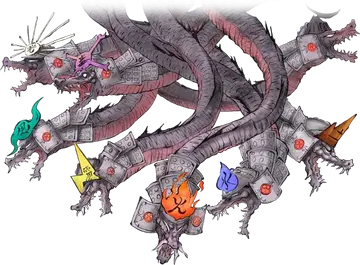
Serpent-démon à huit têtes inspiré du Yamata no Orochi de la mythologie japonaise. Adversaire ultime du jeu de Capcom.
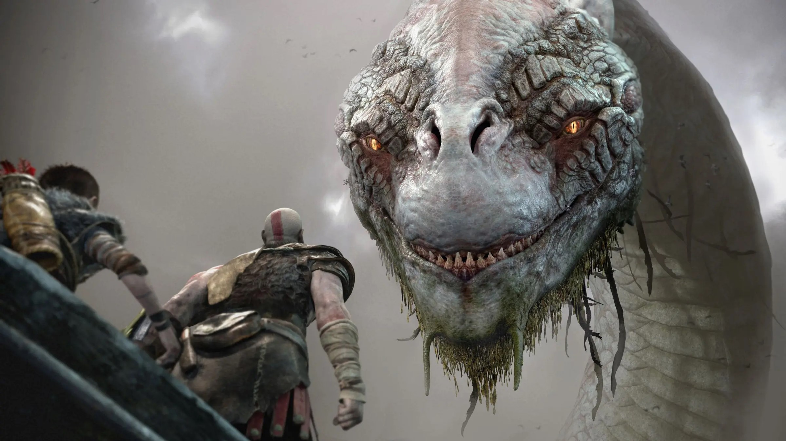
Le Serpent du Monde de la mythologie nordique. Enroulé autour de Midgard, il se mord la queue — symbole de l'infini et du cycle cosmique.
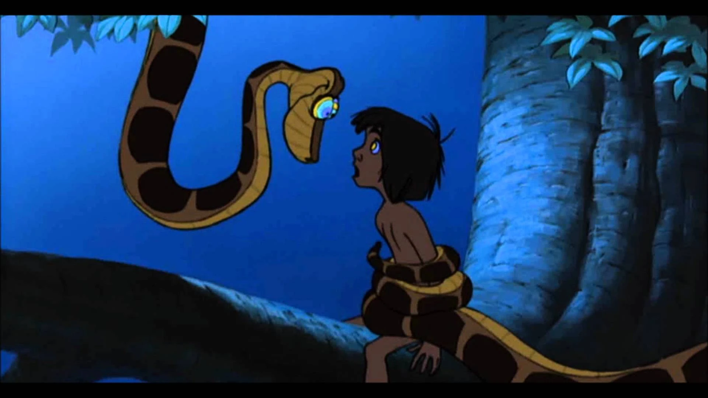
Serpent hypnotiseur au regard envoûtant. Figure ambivalente oscillant entre séduction et danger.
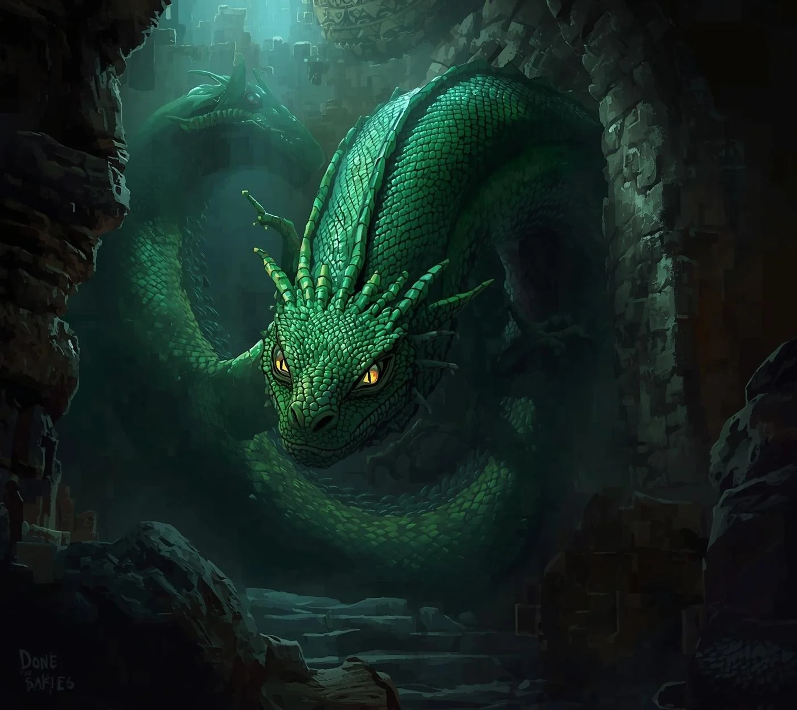
Créature redoutable de l'univers magique — le roi des serpents dont le regard tue. Gardien secret de la Chambre des Secrets.
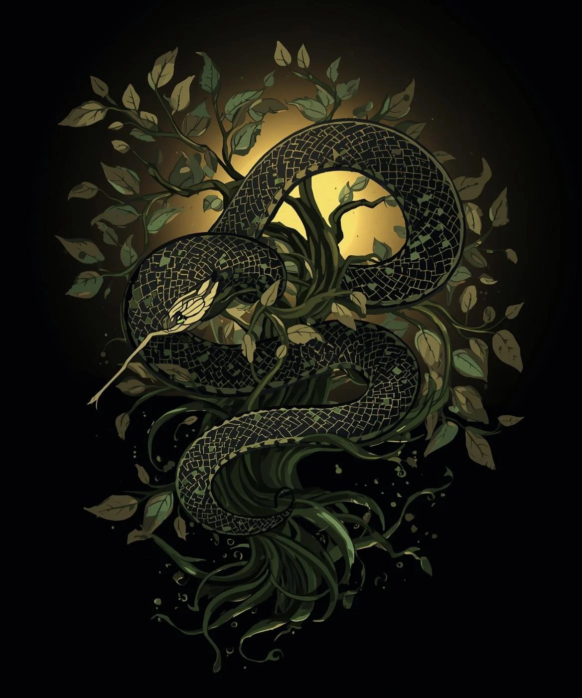
Conclusion
« Entre peur et fascination, le serpent reste l'un des symboles les plus forts de l'humanité. »